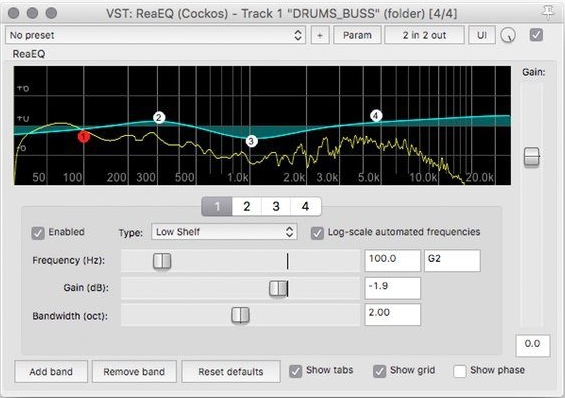
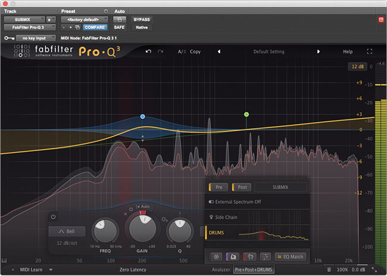
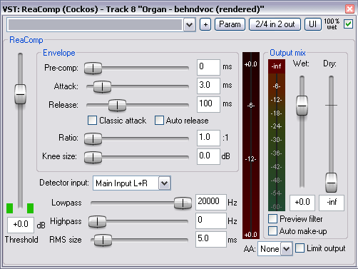
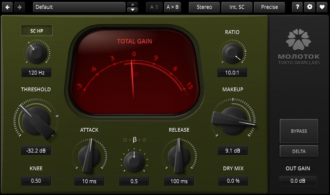
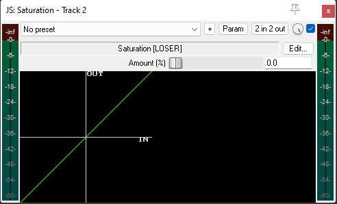
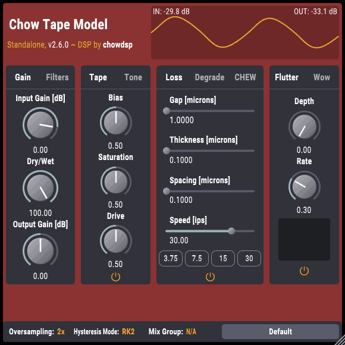
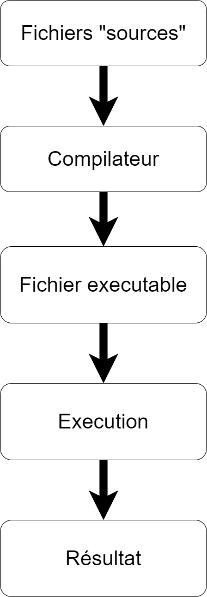
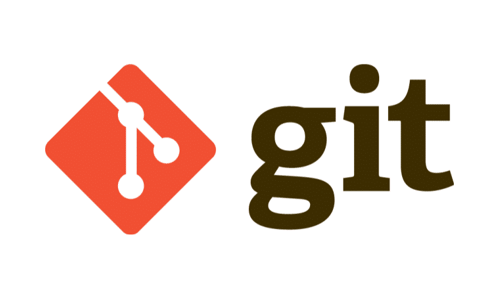
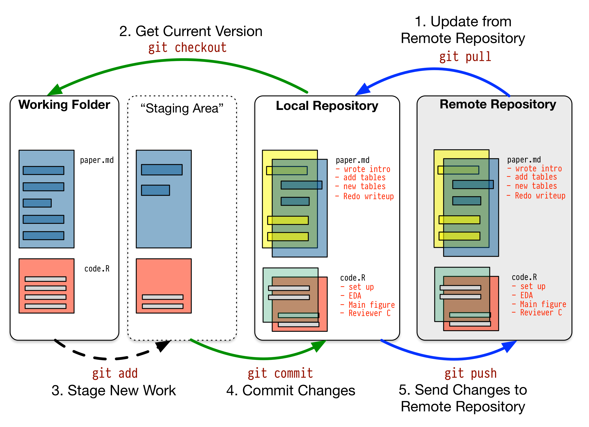

Initiation à la programmation
Et son application aux métiers du son
Programme
Jours 1
- Rappels sur l’informatique dédiée à l’audio temps réel
- Les environnements de développement et les méthodes de travail
- Introduction au langage lua
- Découverte de l’API de ReaScript
- TP : Création de scripts (1/2)
Jours 2
- TP : Création de scripts (2/2)
- Présentation du langage de programmation FAUST
- TP : Créer un plug-in audio
Jours 3
- TP : Création d’un compresseur
- Création d’un plug-in VST3 (?)
Objectifs
- Découvrir le monde de la programmation
- Ajouter la programmation dans sa boite à outils d’ingénieur du son
- Comprendre les tenants et les aboutissants de la création d’un plug-in audio
Contact
- Jean-Loup Pecquais
jeanlouppecquais@ik.me
Préambule
Pourquoi s’intéresser à la programmation ?
- Comprendre le fonctionnement de ses outils
- Pouvoir adapter et/ou construire ses outils
- Mieux investir son temps et son argent ?
Généralités
Les ordinateurs
- Ensemble de composants : Processeurs + Mémoires
- Processeurs : CPU (plusieurs cœurs ou plusieurs CPU), GPU
- Mémoire de stockage, mémoire vive, etc.
- Ensemble de logiciels
- Kernel
- Gestion des périphériques (audio, vidéo, contrôleurs)
- Interfaces graphiques (bureau, explorateur de fichiers)
Les systèmes d’exploitation
Solutions propriétaires

- Windows (Microsoft)
- MacOS (Apple)
Solutions libres
- Linux/GNU (Libre et gratuit)
Choisir son OS ?
- MacOS : Linux clef en main
- Linux : MacOS en kit
- Windows : 🤷♂️
Informatique embarquée / informatique généraliste
Informatique embarquée
- Optimisé pour une tâche (exemple : console de mixage numérique)
Informatique de “bureau”
- Polyvalente, mais non spécifique
On peut également évoquer l’informatique destinée aux serveurs.
Les défis de l’audionumérique sur ordinateur générique
Le traitement de l’audio en temps réel !
- Equipement non dédié (donc non optimisé)
- Tous les kernels ne sont pas égaux.
- Toutes les bus de communication ne se vallent pas (USB vs PCIe par ex.)
- Tous les pilotes d’interfaces audio non plus.
- Ainsi que les logiciels ( Pro Tools & REAPER par ex. ;-) )
Les défis du développement orienté audio
Au-delà de la qualité sonore d’un plug-in
- Optimiser les ressources (CPU / RAM)
- Prendre le minimum de temps possible
Dans les deux cas, la question est souvent : à quel prix sur le rendu sonore ?
Exemple concret : égaliseur
ReaEQ (Cockos)

- temps réel
- Cramping vers la fréquence de Nyquist.
Pro-Q3 (Fab Filter) :

- zéro latence : temps réel, sans cramping. Déphasage du filtre se replie à Nyquist.
- natural phase : 320 smpl de latence, plus de cramping
- phase linéaire : de 3072 smpl à 66560 smpl, inutilisable pour du temps réel.
Exemple concret : compresseur
ReaComp (Cockos)

- Temps réel
- Repliement spectral (aliasing) lorsque les temps d’attaque et de relâchement sont courts.
Molotok (Tokyo Dawn Lab)

- Plusieurs modes permettant d’ajuster le ratio latence/performance audio.
- “Alias” en mode temps réel.
- Les modes éco et precise utilisent certainement du suréchantillonnage pour réduire le repliement spectral.
Exemple concret : saturation
Saturation (LOSER)

- temps réel
- Forte présence d’alisaing
- Léger en ressource.
ChowTapeModel (ChowDSP)

- Latence de 36 smpl par défaut.
- Jusqu’à 102 smpl de latence à OS*16 en phase linéaire.
- Très gourmand en ressource, mais rendu “qualitatif”.
Les qualités d’un plug-in
- Chercher le meilleur rapport entre performance et qualité de rendu sonore
- Stabilité sur les différents formats (VST, VST3, AAX, AU, LV2, etc.)
- Et l’interface utilisateur !
La programmation et ses langages
Que signifie “programmer”
- Donner des instructions au processeur.
- Pour cela on utilise un langage.
- L’utilisation d’un langage plutôt qu’un autre viendra définir un équilibre entre performance, fonctionnalités, et facilité de développement.
Les différents types de langages
Du niveau le plus bas au plus haut (du plus proche de la machine au plus proche de l’utilisateur)
- Le langage assembleur
- Les langages compilés
- Les langages interprétés
Hello world en assembleur !
En assembleur :
Hello world en C++ !
En C++ :
Hello world en lua !
Les langages compilés vs langages interprétés


Langages à “connaître”
Le C (1972), développé par Dennis Ritchie et Kenneth Thompson, aux laboratoires Bell.
- C++ (1983, représente la majorité des applications informatiques)
- Lua (REAPER, TouchOSC)
- JavaScript (MaxMSP, Open Stage Control, Chataîgne)
- Faust (Développement DSP facilité)
- Python (Boîte à outils extrêmement complète, alternative à Mathlab)
- Pour le dsp: Octave, Julia, etc.
Autre:
- Java : Android
- JavaScript : Web en général
En sus (même si ce ne sont pas des languages de programmation):
- Markdown (prise de note, création de documents, pages web)
- Quarto (alternative à LaTeK / HTML)
Les outils de développement
Les IDE
Qu’est-ce qu’un IDE ?
- Environnement de développement intégré
- Regroupe un ensemble de fonctionnalités :
- Un éditeur de texte
- Une aide à l’écriture (auto-complétion)
- Un terminal
- Un compileur / un interpréteur
- Un gestionnaire de projet
Quelques exemples
- Les classiques
- Visual Studio
- X-Code
- CodeBlock
- Les plus “modernes”
- Visual Studio Code
- Sublime text
- PyCharm/Clion/JetBrain
Les frameworks
Le principe
- Proposer un socle de fonctionnalités de base :
- Accesseur audio, une librairie graphique, blocs DSP élémentaires, etc.
Quelques exemples
JUCE
- Utilisé par la grande majorité des plug-ins du marché
- Appartiens à PACES
- Soutenu par une grande communauté
FLUX:: Framework
- Très complet et très puissant
- Réservé à la société FLUX::
- Très peu d’utilisation en dehors des produits FLUX::
Waves, UAD, MeldaProduction, sont des exemples de marques utilisant leur propre framework.
Les SDK
Présentation
- SDK signifie : Software Development Kit
- Outil délivré à des développeurs par des développeurs
Exemples
- SDK VST3 de Steinberg
- SDK AAX de Pro Tools
Les API
Présentation
- API signifie : Application Programming Interface
- Ensemble de classes, méthodes, fonctions et variable
- Permets à deux logiciels de s’interfacer
Exemples
- L’API ReaScript de REAPER
- L’API Javascript de MaxMSP
Les librairies
Présentation
- Ensemble de fonctions dédiées à une tâche particulière
Exemples
- Matplotlib pour le tracé de graphique sous python
Les logiciels de gestion de version
Travail collaboratif
- Le développement est un travail d’équipe
- Architecte logiciel
- Implémentation bas niveau, framework
- Implémentation DSP
- Implémentation graphique
- etc.
- Plusieurs personnes peuvent être amenées à manipuler les mêmes fichiers
- Certaines modifications peuvent casser le programme, comment revenir en arrière ?
Git
- Créé par Linus Torvald
- Open-source
- Logiciel de gestion de version le plus utilisé au monde.

Solutions utilisant Git
- GitHub
- GitLab
- BitBucket
- NPM

Le fonctionnement de Git
Un peu de jargon (1/2)
- clone : Permet de “cloner”, télécharger un dépôt (repository)
- fork : Permets de copier un dépôt existant afin de le modifier sans affecter le dépôt initial.
- branche : Dans la philosophie git, chaque fonctionnalité d’un projet est développée sur une branche à part. La branche principale, souvent appelée master, devrait toujours un projet en état fonctionnel.
- commit : Valider son travail sur le dépôt local. Est toujours associé à une description.
Un peu de jargon (2/2)
- push : Mets à jour le dépôt distant à partir du dépôt local. (upload le dernier commit)
- pull : Mets à jour le dépôt local à partir du dépôt distant. (télécharge le ou les derniers commit)
- pull request : Demande la permission d’appliquer les modifications d’une branche de développement sur la branche principale
- merge : Fusionne une branche dans une autre
TP : Configuration d’un environnement de travail
À faire
- Installer Github Desktop
- Installer Git (devrait être inclus dans Github Desktop)
- Créer un compte sur GitHub
- “Forker” le repository suivant : https://github.com/jpecquais/ENSLL-Dev101-2022
Introduction au langage lua
Généralités
- Créé en 1993, au Brésil
- Luiz Henrique de Figueiredo, Roberto Ierusalimschy et Waldemar Celes
- Conçu afin d’être embarqué au sein d’une autre application
- Interpréteur en C, donc largement compatible
Très populaire dans le développement de jeux vidéos. Utilisé également dans le réseau et dans l’informatique embarquée.
On le retrouve aussi dans les logiciels REAPER et TouchOSC dans le monde de l’audio.
Les variables
Pour déclarer une variable, il suffit de lui donner un nom et une valeur.
Un ensemble de caractères précédés par “–” est considéré comme un commentaire.
La bonne pratique consiste à toujours précéder la déclaration d’une variable par le mot-clef “local”. Cela permet de limiter la zone de définition de la variable.
Les types de variables
local myNumber = 3 --cette variable est un nombre
local myString = "Hello, World!" --cette variable est une chaine de charactère (string)
local myBool = true --cette variable est un booléen
local myNil = nil --cette variable ne possède aucune valeurLe typage en lua est extrêmement faible. Une variable peut changer de type a n’importe quel moment, sans contraintes.
Les opérations
local a = 3+2 --addition
local b = 5-7 --soustraction
local c = 2*5 --multiplication
local d = 10/2 --division
local e = "Hello,".." World!" --concaténationIl est également possible d’appliquer des opérations sur des variables
Quelques fonctions
print("Hello, World!") --Affiche la chaîne de charactères "Hello, World!" dans le terminal. Pratique pour débugger.
local foo = tostring(3)
print(foo) --Affiche la chaîne de charactères "3" dans le terminal.
local bar = tonumber("3")
print(bar) --Affiche le nombre 3 dans le terminal.
local myType = type(foo) --La fonction type retourne une chaîne de charactère indiquant le type de la variable.
print(foo) -- Affiche la chaîne de charactères "number" dans le terminalLes conditions
local a = 3
local b = 2
local result = false
--Les symboles de comparaison sont == >= <= > < ~=
if a == b then
result = true
end
print(result)Les boucles “for”
-- les boucles "for" permettent de boucler un mécanisme tant qu'une variable n'atteint pas une certaine valeur.
for i=0, 10 do --incrément de 0 à 10 par pas de 1 (valeur par défaut)
print(i)
end
for j=10, 0, -1 do --décrément de 10 à 0 par pas de 1
print(j)
end
for k=0, 10, 2 do --incrémente de 0 à 10 par pas de 2
print(k)
endLes fonctions
TP - Scripting dans REAPER
Afficher “Hello World” dans la console de REAPER
- Trouver la fonction de REAPER permettant d’afficher un message dans la console. (print() ne fonctionne pas!)
Compter le nombre de pistes dans la session et afficher ce nombre
- Compter le nombre de pistes
- Afficher ce nombre
Afficher le nom des pistes sélectionnées dans la console
- Compter le nombre de pistes sélectionnées
- Pour chaque piste sélectionnée, obtenir son nom.
- Afficher le nom dans le terminal.
Créer une fonction “print()”
But : créer une fonction pour afficher n’importe n’importe quel type de variable dans la console de REAPER.
Etapes :
- Touver la fonction “ShowConsoleMsg()” dans l’API de REAPER
- Appeler la fonction “ShowConsoleMsg()” à travers une fonction “print()” prenant la valeur à afficher en argument
- Attention au type de la valeur à afficher !
Réinitialiser tous les faders de la session à 0 dB
- Compter le nombre de pistes dans la session
- Pour chaque piste, réinitialiser le fader de niveau à 0 dB
Baisser le volume des pistes sélectionnées de 3 dB
Déplacer les pistes sélectionnées dans une nouvelle piste dossier
Etapes :
- Trouver la fonction de l’API permettant de réorganiser les pistes
- Créer une nouvelle piste
- Déplacer les pistes sélectionnées comme filles de la piste créée à l’étape (2)
Afficher le timecode de début et de fin des objets sélectionnés dans la console
Couper l’objet sous le curseur de la souris au niveau du curseur de la souris
FAUST
Kézako ?
TP JSFX
Contrôle de volume (1/2)
Panner
- On veut un réglage pour panner le signal en entré (mono ou stéréo)
- On peut penser à un système à deux contrôles de volume, un pour le canal 1 et un pour le canal 2, piloté par le même réglage
Clipper
- En analogique, “clipper” c’est quand la tension du signal d’entré excède la tension d’alimentation.
- En numérique, “clipper” c’est dépasser le 0 dBFS en 24bit. En linéaire, un échantillon “clip” quand sa valeur dépasse 1.
- Nous pouvons donc imaginer un système de seuil. Lorsque le signal en entré dépasse le seuil, on retourne la valeur du seuil.
Tremolo
- Un trémolo permet de moduler l’intensité sonore d’une source en fonction d’un générateur basse fréquence “LFO”
- Une implémentation simple d’un LFO peut se faire à travers une fonction sinus (ou cosinus). \(y = sin(2\pi \times f+\phi)\) . Rappelons ici que la fréquence est égale à l’inverse de la période. La période étant un temps, il est possible de l’exprimer en échantillon.
- Bonus : comment pourrait-on différencier le traitement du canal gauche du canal droit, avec une notion de largeur stéréophonique ?
- Bonus 2 : Que se passe t-il, pour un son pur, si la fréquence du LFO dépasse 20 Hz et plus ?
Délai de remise en phase
- Pour retard un signal, il faut l’enregistrer, puis le relire en temps différé.
- Il faut donc :
- Une mémoire tampon (buffer), qui prendra la forme d’un tableau dans lequel on stockera des données.
- Une tête d’enregistrement et une tête de lecture, qui prendront la forme de deux variables qui seront incrémentées à chaque nouvel échantillon.
- La différence entre les valeurs des deux têtes de lecture correspondra au délai de relecture.
- Le temps de délai sera exprimé en échantillons pour l’utilisateur.
Sujet libre !
Quelques propositions :
- Un pan en gain et délai
- Un chorus
- Un flanger
- Un looper
- Un écho